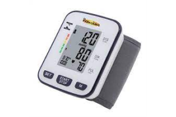
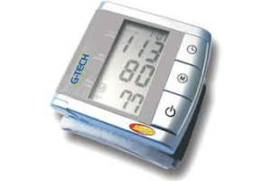
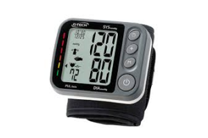
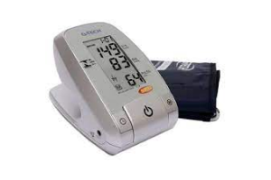
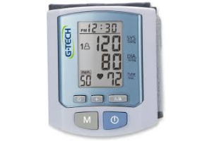
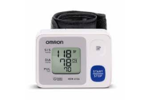

MEDIDORES DE PRESSÃO DIGITAL

O medidor de pressão arterial serve para que pacientes com hipertensão, bem como pessoas interessadas em um autocuidado tenham o controle de sua saúde.
Preço R$159,99

O medidor de pressão arterial serve para que pacientes com hipertensão, bem como pessoas interessadas em um autocuidado tenham o controle de sua saúde.
Preço R$189,99

O medidor de pressão arterial serve para que pacientes com hipertensão, bem como pessoas interessadas em um autocuidado tenham o controle de sua saúde.
Preço R$199,99

O medidor de pressão arterial serve para que pacientes com hipertensão, bem como pessoas interessadas em um autocuidado tenham o controle de sua saúde.
Preço R$139,99

O medidor de pressão arterial serve para que pacientes com hipertensão, bem como pessoas interessadas em um autocuidado tenham o controle de sua saúde.
Preço R$126,99

O medidor de pressão arterial serve para que pacientes com hipertensão, bem como pessoas interessadas em um autocuidado tenham o controle de sua saúde.
Preço R$149,99